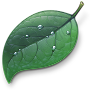
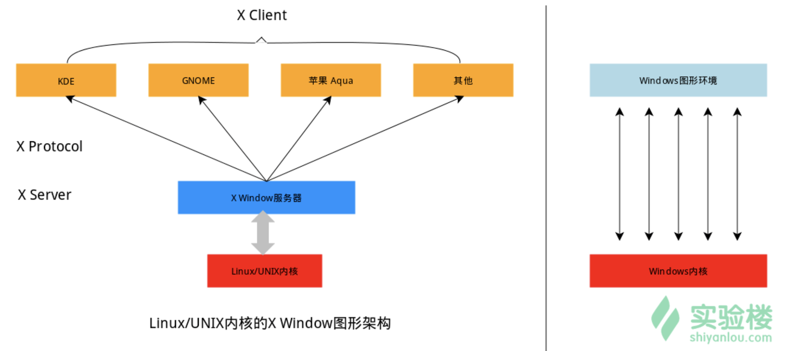

<!DOCTYPE html>
  <html>
    <head>
      <title>linux_shell</title>
      <meta charset="utf-8">
      <meta name="viewport" content="width=device-width, initial-scale=1.0">
      
      <link rel="stylesheet" href="https://cdnjs.cloudflare.com/ajax/libs/KaTeX/0.9.0/katex.min.css">
      
      
      
      
      
      
      
      
      
      

      <style> 
      /**
 * prism.js Github theme based on GitHub's theme.
 * @author Sam Clarke
 */
code[class*="language-"],
pre[class*="language-"] {
  color: #333;
  background: none;
  font-family: Consolas, "Liberation Mono", Menlo, Courier, monospace;
  text-align: left;
  white-space: pre;
  word-spacing: normal;
  word-break: normal;
  word-wrap: normal;
  line-height: 1.4;

  -moz-tab-size: 8;
  -o-tab-size: 8;
  tab-size: 8;

  -webkit-hyphens: none;
  -moz-hyphens: none;
  -ms-hyphens: none;
  hyphens: none;
}

/* Code blocks */
pre[class*="language-"] {
  padding: .8em;
  overflow: auto;
  /* border: 1px solid #ddd; */
  border-radius: 3px;
  /* background: #fff; */
  background: #f5f5f5;
}

/* Inline code */
:not(pre) > code[class*="language-"] {
  padding: .1em;
  border-radius: .3em;
  white-space: normal;
  background: #f5f5f5;
}

.token.comment,
.token.blockquote {
  color: #969896;
}

.token.cdata {
  color: #183691;
}

.token.doctype,
.token.punctuation,
.token.variable,
.token.macro.property {
  color: #333;
}

.token.operator,
.token.important,
.token.keyword,
.token.rule,
.token.builtin {
  color: #a71d5d;
}

.token.string,
.token.url,
.token.regex,
.token.attr-value {
  color: #183691;
}

.token.property,
.token.number,
.token.boolean,
.token.entity,
.token.atrule,
.token.constant,
.token.symbol,
.token.command,
.token.code {
  color: #0086b3;
}

.token.tag,
.token.selector,
.token.prolog {
  color: #63a35c;
}

.token.function,
.token.namespace,
.token.pseudo-element,
.token.class,
.token.class-name,
.token.pseudo-class,
.token.id,
.token.url-reference .token.variable,
.token.attr-name {
  color: #795da3;
}

.token.entity {
  cursor: help;
}

.token.title,
.token.title .token.punctuation {
  font-weight: bold;
  color: #1d3e81;
}

.token.list {
  color: #ed6a43;
}

.token.inserted {
  background-color: #eaffea;
  color: #55a532;
}

.token.deleted {
  background-color: #ffecec;
  color: #bd2c00;
}

.token.bold {
  font-weight: bold;
}

.token.italic {
  font-style: italic;
}


/* JSON */
.language-json .token.property {
  color: #183691;
}

.language-markup .token.tag .token.punctuation {
  color: #333;
}

/* CSS */
code.language-css,
.language-css .token.function {
  color: #0086b3;
}

/* YAML */
.language-yaml .token.atrule {
  color: #63a35c;
}

code.language-yaml {
  color: #183691;
}

/* Ruby */
.language-ruby .token.function {
  color: #333;
}

/* Markdown */
.language-markdown .token.url {
  color: #795da3;
}

/* Makefile */
.language-makefile .token.symbol {
  color: #795da3;
}

.language-makefile .token.variable {
  color: #183691;
}

.language-makefile .token.builtin {
  color: #0086b3;
}

/* Bash */
.language-bash .token.keyword {
  color: #0086b3;
}html body{font-family:"Helvetica Neue",Helvetica,"Segoe UI",Arial,freesans,sans-serif;font-size:16px;line-height:1.6;color:#333;background-color:#fff;overflow:initial;box-sizing:border-box;word-wrap:break-word}html body>:first-child{margin-top:0}html body h1,html body h2,html body h3,html body h4,html body h5,html body h6{line-height:1.2;margin-top:1em;margin-bottom:16px;color:#000}html body h1{font-size:2.25em;font-weight:300;padding-bottom:.3em}html body h2{font-size:1.75em;font-weight:400;padding-bottom:.3em}html body h3{font-size:1.5em;font-weight:500}html body h4{font-size:1.25em;font-weight:600}html body h5{font-size:1.1em;font-weight:600}html body h6{font-size:1em;font-weight:600}html body h1,html body h2,html body h3,html body h4,html body h5{font-weight:600}html body h5{font-size:1em}html body h6{color:#5c5c5c}html body strong{color:#000}html body del{color:#5c5c5c}html body a:not([href]){color:inherit;text-decoration:none}html body a{color:#08c;text-decoration:none}html body a:hover{color:#00a3f5;text-decoration:none}html body img{max-width:100%}html body>p{margin-top:0;margin-bottom:16px;word-wrap:break-word}html body>ul,html body>ol{margin-bottom:16px}html body ul,html body ol{padding-left:2em}html body ul.no-list,html body ol.no-list{padding:0;list-style-type:none}html body ul ul,html body ul ol,html body ol ol,html body ol ul{margin-top:0;margin-bottom:0}html body li{margin-bottom:0}html body li.task-list-item{list-style:none}html body li>p{margin-top:0;margin-bottom:0}html body .task-list-item-checkbox{margin:0 .2em .25em -1.8em;vertical-align:middle}html body .task-list-item-checkbox:hover{cursor:pointer}html body blockquote{margin:16px 0;font-size:inherit;padding:0 15px;color:#5c5c5c;border-left:4px solid #d6d6d6}html body blockquote>:first-child{margin-top:0}html body blockquote>:last-child{margin-bottom:0}html body hr{height:4px;margin:32px 0;background-color:#d6d6d6;border:0 none}html body table{margin:10px 0 15px 0;border-collapse:collapse;border-spacing:0;display:block;width:100%;overflow:auto;word-break:normal;word-break:keep-all}html body table th{font-weight:bold;color:#000}html body table td,html body table th{border:1px solid #d6d6d6;padding:6px 13px}html body dl{padding:0}html body dl dt{padding:0;margin-top:16px;font-size:1em;font-style:italic;font-weight:bold}html body dl dd{padding:0 16px;margin-bottom:16px}html body code{font-family:Menlo,Monaco,Consolas,'Courier New',monospace;font-size:.85em !important;color:#000;background-color:#f0f0f0;border-radius:3px;padding:.2em 0}html body code::before,html body code::after{letter-spacing:-0.2em;content:"\00a0"}html body pre>code{padding:0;margin:0;font-size:.85em !important;word-break:normal;white-space:pre;background:transparent;border:0}html body .highlight{margin-bottom:16px}html body .highlight pre,html body pre{padding:1em;overflow:auto;font-size:.85em !important;line-height:1.45;border:#d6d6d6;border-radius:3px}html body .highlight pre{margin-bottom:0;word-break:normal}html body pre code,html body pre tt{display:inline;max-width:initial;padding:0;margin:0;overflow:initial;line-height:inherit;word-wrap:normal;background-color:transparent;border:0}html body pre code:before,html body pre tt:before,html body pre code:after,html body pre tt:after{content:normal}html body p,html body blockquote,html body ul,html body ol,html body dl,html body pre{margin-top:0;margin-bottom:16px}html body kbd{color:#000;border:1px solid #d6d6d6;border-bottom:2px solid #c7c7c7;padding:2px 4px;background-color:#f0f0f0;border-radius:3px}@media print{html body{background-color:#fff}html body h1,html body h2,html body h3,html body h4,html body h5,html body h6{color:#000;page-break-after:avoid}html body blockquote{color:#5c5c5c}html body pre{page-break-inside:avoid}html body table{display:table}html body img{display:block;max-width:100%;max-height:100%}html body pre,html body code{word-wrap:break-word;white-space:pre}}.markdown-preview{width:100%;height:100%;box-sizing:border-box}.markdown-preview .pagebreak,.markdown-preview .newpage{page-break-before:always}.markdown-preview pre.line-numbers{position:relative;padding-left:3.8em;counter-reset:linenumber}.markdown-preview pre.line-numbers>code{position:relative}.markdown-preview pre.line-numbers .line-numbers-rows{position:absolute;pointer-events:none;top:1em;font-size:100%;left:0;width:3em;letter-spacing:-1px;border-right:1px solid #999;-webkit-user-select:none;-moz-user-select:none;-ms-user-select:none;user-select:none}.markdown-preview pre.line-numbers .line-numbers-rows>span{pointer-events:none;display:block;counter-increment:linenumber}.markdown-preview pre.line-numbers .line-numbers-rows>span:before{content:counter(linenumber);color:#999;display:block;padding-right:.8em;text-align:right}.markdown-preview .mathjax-exps .MathJax_Display{text-align:center !important}.markdown-preview:not([for="preview"]) .code-chunk .btn-group{display:none}.markdown-preview:not([for="preview"]) .code-chunk .status{display:none}.markdown-preview:not([for="preview"]) .code-chunk .output-div{margin-bottom:16px}.scrollbar-style::-webkit-scrollbar{width:8px}.scrollbar-style::-webkit-scrollbar-track{border-radius:10px;background-color:transparent}.scrollbar-style::-webkit-scrollbar-thumb{border-radius:5px;background-color:rgba(150,150,150,0.66);border:4px solid rgba(150,150,150,0.66);background-clip:content-box}html body[for="html-export"]:not([data-presentation-mode]){position:relative;width:100%;height:100%;top:0;left:0;margin:0;padding:0;overflow:auto}html body[for="html-export"]:not([data-presentation-mode]) .markdown-preview{position:relative;top:0}@media screen and (min-width:914px){html body[for="html-export"]:not([data-presentation-mode]) .markdown-preview{padding:2em calc(50% - 457px)}}@media screen and (max-width:914px){html body[for="html-export"]:not([data-presentation-mode]) .markdown-preview{padding:2em}}@media screen and (max-width:450px){html body[for="html-export"]:not([data-presentation-mode]) .markdown-preview{font-size:14px !important;padding:1em}}@media print{html body[for="html-export"]:not([data-presentation-mode]) #sidebar-toc-btn{display:none}}html body[for="html-export"]:not([data-presentation-mode]) #sidebar-toc-btn{position:fixed;bottom:8px;left:8px;font-size:28px;cursor:pointer;color:inherit;z-index:99;width:32px;text-align:center;opacity:.4}html body[for="html-export"]:not([data-presentation-mode])[html-show-sidebar-toc] #sidebar-toc-btn{opacity:1}html body[for="html-export"]:not([data-presentation-mode])[html-show-sidebar-toc] .md-sidebar-toc{position:fixed;top:0;left:0;width:300px;height:100%;padding:32px 0 48px 0;font-size:14px;box-shadow:0 0 4px rgba(150,150,150,0.33);box-sizing:border-box;overflow:auto;background-color:inherit}html body[for="html-export"]:not([data-presentation-mode])[html-show-sidebar-toc] .md-sidebar-toc::-webkit-scrollbar{width:8px}html body[for="html-export"]:not([data-presentation-mode])[html-show-sidebar-toc] .md-sidebar-toc::-webkit-scrollbar-track{border-radius:10px;background-color:transparent}html body[for="html-export"]:not([data-presentation-mode])[html-show-sidebar-toc] .md-sidebar-toc::-webkit-scrollbar-thumb{border-radius:5px;background-color:rgba(150,150,150,0.66);border:4px solid rgba(150,150,150,0.66);background-clip:content-box}html body[for="html-export"]:not([data-presentation-mode])[html-show-sidebar-toc] .md-sidebar-toc a{text-decoration:none}html body[for="html-export"]:not([data-presentation-mode])[html-show-sidebar-toc] .md-sidebar-toc ul{padding:0 1.6em;margin-top:.8em}html body[for="html-export"]:not([data-presentation-mode])[html-show-sidebar-toc] .md-sidebar-toc li{margin-bottom:.8em}html body[for="html-export"]:not([data-presentation-mode])[html-show-sidebar-toc] .md-sidebar-toc ul{list-style-type:none}html body[for="html-export"]:not([data-presentation-mode])[html-show-sidebar-toc] .markdown-preview{left:300px;width:calc(100% -  300px);padding:2em calc(50% - 457px -  150px);margin:0;box-sizing:border-box}@media screen and (max-width:1274px){html body[for="html-export"]:not([data-presentation-mode])[html-show-sidebar-toc] .markdown-preview{padding:2em}}@media screen and (max-width:450px){html body[for="html-export"]:not([data-presentation-mode])[html-show-sidebar-toc] .markdown-preview{width:100%}}html body[for="html-export"]:not([data-presentation-mode]):not([html-show-sidebar-toc]) .markdown-preview{left:50%;transform:translateX(-50%)}html body[for="html-export"]:not([data-presentation-mode]):not([html-show-sidebar-toc]) .md-sidebar-toc{display:none}
/* Please visit the URL below for more information: */
/*   https://shd101wyy.github.io/markdown-preview-enhanced/#/customize-css */
.markdown-preview.markdown-preview code.red {
  background-color: #f8f2f4;
  color: #d40a32;
}
.markdown-preview.markdown-preview code.green {
  background-color: #eafef1;
  color: #089308;
}
.markdown-preview.markdown-preview #maste_title {
  color: #00bfff;
  font-size: 50px;
  font-family: 'Courier New', Courier, monospace;
}
.markdown-preview.markdown-preview .vice_title {
  color: #d0a3d0;
  font-size: 25px;
  font-family: 'Courier New', Courier, monospace;
}
.markdown-preview.markdown-preview hr.title_separator {
  border: 0;
  height: 0;
  /* Firefox... */
  box-shadow: 0 0 10px 1px deepskyblue;
}
 
      </style>
    </head>
    <body for="html-export">
      <div class="mume markdown-preview   ">
      <p> <span id="maste_title">foolish fly fox's blog<span></span></span></p>
<p><span class="vice_title">--Stay hungry, stay foolish.<span><br>
<span class="vice_title">--Forever young, forever weeping.<span></span></span></span></span></p>
<hr class="title_separator">
<br>
<blockquote>
<p>博客主页为：<a href="https://foolishflyfox.github.io/CsLearnNote/">https://foolishflyfox.github.io/CsLearnNote/</a></p>
</blockquote>
<h1 class="mume-header" id="linux-and-shell">Linux and shell</h1>

<h2 class="mume-header" id="linux-%E6%A1%8C%E9%9D%A2%E7%8E%AF%E5%A2%83%E4%BB%8B%E7%BB%8D">Linux 桌面环境介绍</h2>

<p>Linux 上的这套图形化界面软件以前是 XFree86，现在则是 xorg（<a href="http://X.Org">X.Org</a>），而这套软件又是通过 X 窗口系统（X Window System，也常被称为 X11 或 X）实现的，X 本身只是工具包及架构协议，而 xorg 便是 X 架构规范的一个实现体，也就是说它是实现了 X 协议规范的一个提供图形界面服务的服务器，就像实现了 http 协议提供 web 服务的 Apache 。</p>
<p>如果只有服务器也是不能实现一个完整的桌面环境的，当然还需要一个客户端，我们称为 X Client，像如下几个大家熟知也最流行的实现了客户端功能的桌面环境 KDE，GNOME，XFCE，LXDE 。其中就有你看到的，实验楼目前使用的 XFCE 桌面环境，部分老用户可能可以回想起，实验楼之前使用的环境是 LXDE 。这也意味着在 Linux 上你可以自己选择安装不同的桌面环境，甚至可以定制自己的专属桌面。</p>
<p></p>
<h2 class="mume-header" id="%E6%8E%A7%E5%88%B6%E5%8F%B0">控制台</h2>

<p>通常我们在使用 Linux 时，并不是直接与系统打交道，而是通过一个叫做 Shell 的中间程序来完成的，在图形界面下为了实现让我们在一个窗口中完成用户输入和显示输出，Linux 系统还提供了一个叫做终端模拟器的程序（Terminal），下面是几个比较常见的终端模拟器： gnome-terminal，Konsole，xterm，rxvt，kvt，nxterm 和 eterm 。目前我们的实验中的终端程序是 xfce 桌面环境自带的 xfce-terminal 。不过要注意的是这里所说的终端（Terminal）和控制台（Console）是有区别的。</p>
<p>终端本质上是对应着 Linux 上的 /dev/tty 设备，Linux 的多用户登陆就是通过不同的 /dev/tty 设备完成的，Linux 默认提供了 6 个纯命令行界面的 “terminal”（准确的说这里应该是 6 个 virtual consoles）来让用户登录。在物理机系统上你可以通过使用<code>[Ctrl]+[Alt]+[F1]～[F6]</code>进行切换，不过在我们的在线实验环境中可能无法切换，因为特殊功能按键会被你的主机系统劫持。当你切换到其中一个终端后想要切换回图形界面，你可以按下<code>[Ctrl]+[Alt]+[F7]</code>来完成。</p>
<h3 class="mume-header" id="%E6%8E%A7%E5%88%B6%E5%8F%B0%E4%B8%8B%E5%B8%B8%E7%94%A8%E7%9A%84%E5%BF%AB%E6%8D%B7%E9%94%AE">控制台下常用的快捷键</h3>

<table>
<thead>
<tr>
<th>按键</th>
<th>作用</th>
</tr>
</thead>
<tbody>
<tr>
<td><code>Ctrl+c</code></td>
<td>结束当前的执行进程</td>
</tr>
<tr>
<td><code>Ctrl+d</code></td>
<td>键盘输入结束或退出终端</td>
</tr>
<tr>
<td><code>Ctrl+s</code></td>
<td>暂停当前程序，暂停后按下任意键恢复运行</td>
</tr>
<tr>
<td><code>Ctrl+z</code></td>
<td>将当前程序放到后台运行，恢复到前台为命令fg</td>
</tr>
<tr>
<td><code>Ctrl+a</code></td>
<td>将光标移至输入行头，相当于Home键</td>
</tr>
<tr>
<td><code>Ctrl+e</code></td>
<td>将光标移至输入行末，相当于End键</td>
</tr>
<tr>
<td><code>Ctrl+l</code></td>
<td>清屏 相当于命令 clear</td>
</tr>
<tr>
<td><code>Ctrl+k</code></td>
<td>删除从光标所在位置到行末</td>
</tr>
<tr>
<td><code>Alt+Backspace</code></td>
<td>向前删除一个单词</td>
</tr>
</tbody>
</table>
<h3 class="mume-header" id="%E7%BB%88%E7%AB%AF%E4%B8%AD%E7%9A%84%E6%93%8D%E4%BD%9C">终端中的操作</h3>

<p><code>!数字</code> 执行指定 id 的历史命令；</p>
<p><code>{1..5}</code> 表示数字 1~5，例如 <code>touch love_{1..10}.txt</code> 将会创建 <em>love_1.txt</em>、<em>love_2.txt</em>、...、<em>love_10.txt</em> 共 10 个文件；<code>echo {0..5}</code> 输出为： <code>0 1 2 3 4 5</code>。</p>
<h3 class="mume-header" id="shell-%E4%B8%AD%E7%9A%84%E5%B8%B8%E7%94%A8%E9%80%9A%E9%85%8D%E7%AC%A6">shell 中的常用通配符</h3>

<table>
<thead>
<tr>
<th>字符</th>
<th>含义</th>
</tr>
</thead>
<tbody>
<tr>
<td><code>*</code></td>
<td>匹配0个或多个字符</td>
</tr>
<tr>
<td><code>?</code></td>
<td>匹配任意1个字符</td>
</tr>
<tr>
<td><code>[list]</code></td>
<td>匹配list中的任意一个字符</td>
</tr>
<tr>
<td><code>[^list]</code></td>
<td>匹配除list中的任意单一字符以外的字符</td>
</tr>
<tr>
<td><code>[c1-c2]</code></td>
<td>匹配c1-c2中的任意单一字符，如：<code>[0-9]</code>、<code>[a-z]</code></td>
</tr>
<tr>
<td><code>{string1,string2,...}</code></td>
<td>匹配 string1 或 string2 或更多，其中一个字符串</td>
</tr>
<tr>
<td><code>{c1..c2}</code></td>
<td>匹配 c1-c2 中全部的字符，如 <code>{1..10}</code></td>
</tr>
</tbody>
</table>
<p><code>man -a open</code> 其中参数 <code>-a</code> 表示要查看所有 open 操作的帮助文档，包括 1-一般命令、2-系统调用、3-库函数、4-特殊文件和驱动程序、5-文件格式和约定、6-游戏和屏保、杂项、系统管理命令和守护进程。</p>
<p><strong>echo {1..15}</strong> 输出的是：<code>1 2 3 4 5 6 7 8 9 10 11 12 13 14 15</code> 因此 <code>{c1..c2}</code>可以是数字。</p>

      </div>
      <div class="md-sidebar-toc"><ul>
<li><a href="#linux-and-shell">Linux and shell</a>
<ul>
<li><a href="#linux-%E6%A1%8C%E9%9D%A2%E7%8E%AF%E5%A2%83%E4%BB%8B%E7%BB%8D">Linux 桌面环境介绍</a></li>
<li><a href="#%E6%8E%A7%E5%88%B6%E5%8F%B0">控制台</a>
<ul>
<li><a href="#%E6%8E%A7%E5%88%B6%E5%8F%B0%E4%B8%8B%E5%B8%B8%E7%94%A8%E7%9A%84%E5%BF%AB%E6%8D%B7%E9%94%AE">控制台下常用的快捷键</a></li>
<li><a href="#%E7%BB%88%E7%AB%AF%E4%B8%AD%E7%9A%84%E6%93%8D%E4%BD%9C">终端中的操作</a></li>
<li><a href="#shell-%E4%B8%AD%E7%9A%84%E5%B8%B8%E7%94%A8%E9%80%9A%E9%85%8D%E7%AC%A6">shell 中的常用通配符</a></li>
</ul>
</li>
</ul>
</li>
</ul>
</div>
      <a id="sidebar-toc-btn">≡</a>
    </body>
    
    
    
    
    
    
    
<script>

var sidebarTOCBtn = document.getElementById('sidebar-toc-btn')
sidebarTOCBtn.addEventListener('click', function(event) {
  event.stopPropagation()
  if (document.body.hasAttribute('html-show-sidebar-toc')) {
    document.body.removeAttribute('html-show-sidebar-toc')
  } else {
    document.body.setAttribute('html-show-sidebar-toc', true)
  }
})
</script>
      
  </html>